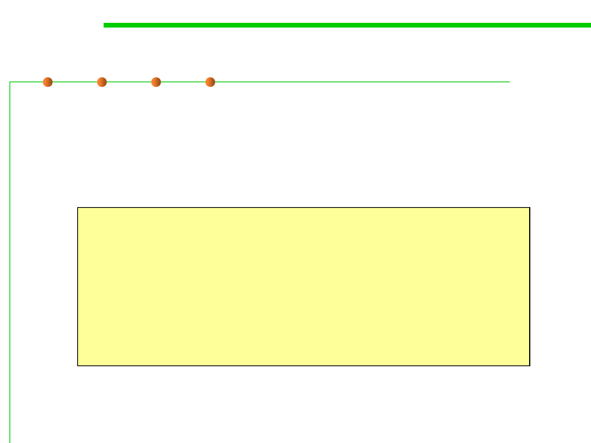
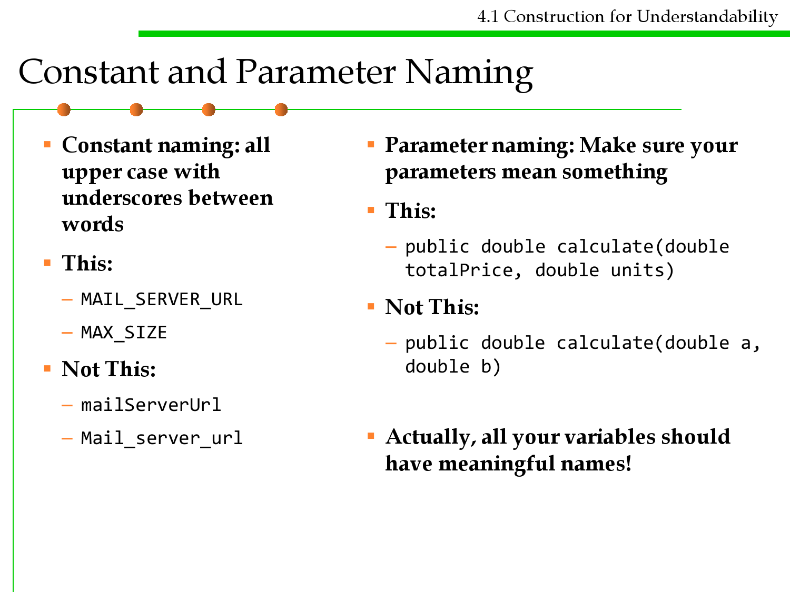
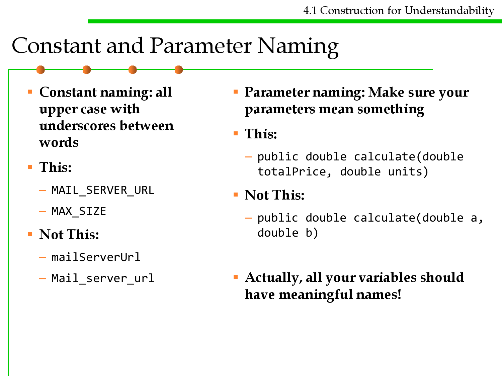
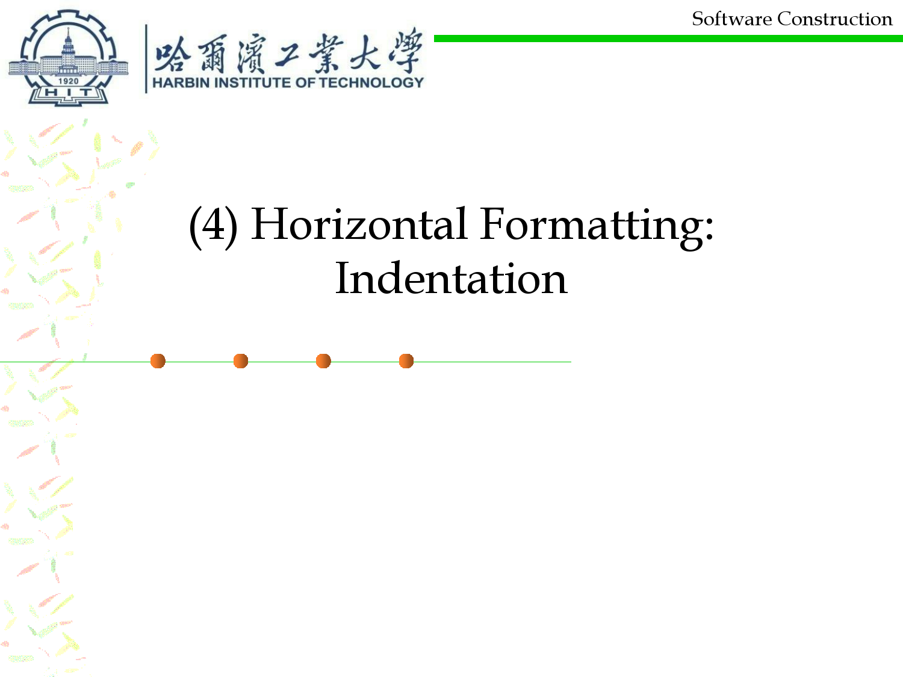
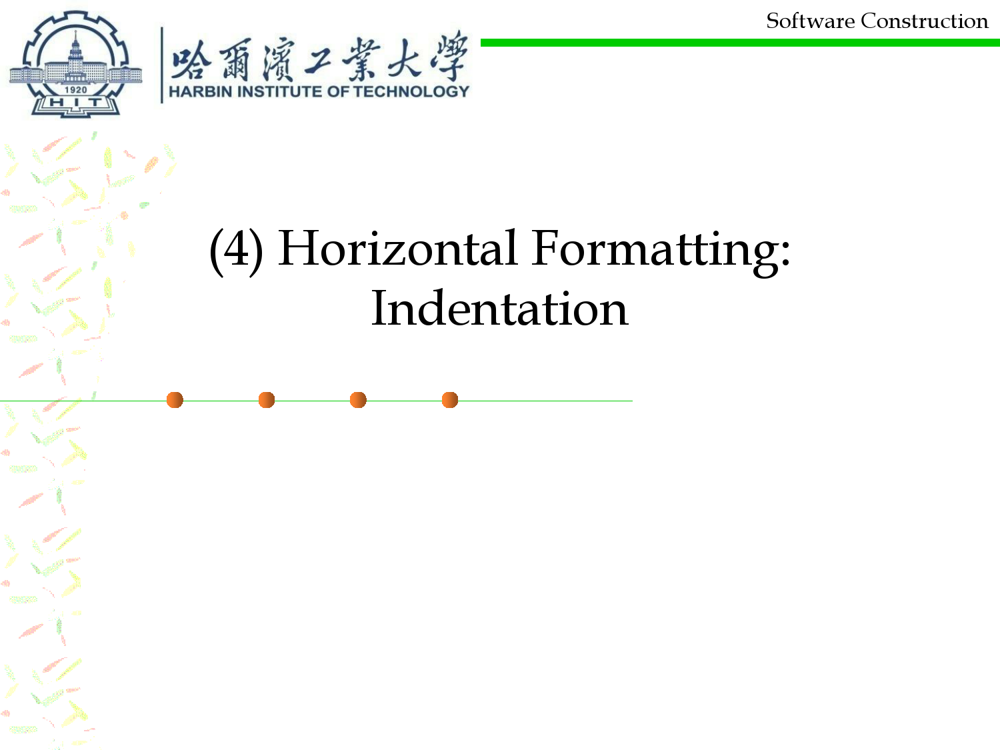

微信公众号[深容Pubmed文献检索] 1. 此处右键：选菜单【翻成中文（简体）】 2. 翻译后，此处右键：选菜单【打印...】成PDF格式
建议屏幕分辨率：1920X1080；如果屏幕太小，可以按Ctrl + 或 Ctrl -缩放网页。

Software Construction
Chapter 4: Software Construction for
Understandability
4.1 Construction for
Understandability
Xu Hanchuan
xhc@hit.edu.cn
April 7, 2019

Outline
4.1 Construction for Understandability
▪ Metrics for Understandability
▪ Documenting in source code
– Specifications, Rep Invariants, Abstract Function, Safety from Rep
Exposure, Testing Strategy, Thread-Safe, …
– Comments
▪ Pseudo-code before programming
▪ Coding conventions
– Naming
– Formatting: Length, White lines, Spacing, Indentation
– File organization
▪ Summary

4.1 Construction for Understandability
What Stroustrup (inventor of C++) said
▪ “I like my code to be elegant and efficient.
– The logic should be straightforward to make it
hard for bugs to hide (This chapter)
– The dependencies minimal to ease maintenance
(Chapter 6)
– Error handling complete according to an articulated
strategy (Chapter 7)
– Performance close to optimal so as not to tempt
people to make the code messy with unprincipled
optimizations (Chapter 8)
▪ Clean code does one thing well.”
4.1 Construction for Understandability
What Grady Booch said about code
▪ Clean code is simple and direct.
▪ Clean code reads like well-written
prose.
▪ Clean code never obscures the
designer’s intent but rather is full of
crisp abstractions and
straightforward lines of control.

Software Construction
1 Metrics for Understandability

4.1 Construction for Understandability
What is Understandability?
▪ Understandability – the readability of the code
▪ For example:
– Are naming conventions followed?
– Is it self-descriptive and/or well commented?
– Are things (e.g., classes) doing only one thing or many things at once?
– Are the methods really long or short and can their intent be understood in
a single pass of reading or does it take a good deal of screen staring and
whiteboard analysis?
▪ Why do we need understandable code: source code with low
understandability are error-prone and hard to maintain!

An alias: Readability
4.1 Construction for Understandability
▪ Readability refers to the ease with which a human reader can
comprehend the purpose, control flow, and operation of source
code.
– It affects the aspects of quality above, including portability, usability and
most importantly maintainability.
▪ Readability is important because programmers spend the majority
of their time reading, trying to understand and modifying existing
source code, rather than writing new source code.
– Unreadable code often leads to bugs, inefficiencies, and duplicated code.

Code Readability Example
4.1 Construction for Understandability
Example #a
z = ((3*x^2) + (4*x) – 5) – ((2*y^2) – (7*y) + 11) / ((3*x^2) + (4*x) – 5)
vs.
Example #b
a = ((3*x^2) + (4*x) – 5)
b = ((2*y^2) – (7*y) + 11)
z = (a – b) / a
“Although both examples are comprehensible, example b is
comprehensible with greater ease (i.e., more readable) than
example a.”
4.1 Construction for Understandability
Code quality measurement: WTFs/min ☺

Length of names
4.1 Construction for Understandability
▪ The longer the names of classes, variables, methods, etc., the more
descriptive they probably are, to accurately reflect the purpose of
the entity.
– Names should be descriptive. The longer the name, the more descriptive it
is likely to be.
– Names should also be succinct. The longer the name, the less efficient it is
likely to be.
– a is not a good variable name, Age is better, but EmployeeAge seems much
more descriptive.
– Generally, names consisting of 1 or 2 letters are not good. What is enough
depends on your language and the application you're making.
▪ Metrics: Average length of all names
➔ Good naming conventions

4.1 Construction for Understandability
Name Uniqueness Ratio (UNIQ)
▪ Name Uniqueness Ratio (UNIQ)
– When two entities have the same name, it's possible that they get mixed.
UNIQ measures the uniqueness of all names.
– It's acceptable to use the same name at many locations. However, the
name should refer to the same logical thing.
▪ For example, variable userName should always contain the same
type of username in the same data type (string). If userName can
mean one thing in one procedure and another thing somewhere else,
the likelihood of confusion increases.

Complexity and LoC
4.1 Construction for Understandability
▪ Complexity
– Complex code isn't likely to be understandable. (details are to be
discussed in Chapter 5 Maintainability-Oriented Construction)
▪ Lines of code (LoC)
– The longer a method gets, the harder it probably is to understand.

4.1 Construction for Understandability
Comment density (MCOMM%)
▪ The more comments in your code, the easier it is to read - and
understand.
– Whitespace lines are also important for legibility.
▪ Note: Not all comments contain a description of what's happening.
Some comments are simply separators, such '----------. So, it's more
sensible to pay attention to meaningful comments and not just any
comments.
– A profusion of comments provides an easy-to-follow natural-language
narrative.
▪ Measurement: how many meaningful comments there are per each
logical line of code.
MCOMM% = MCOMM / LOC

4.1 Construction for Understandability
How to do in writing understable code?
▪ Many many considerations:
– Naming conventions (consisting naming scheme)
– Limit line length and file length
– Enough necessary comments
– Code format such as Consistent Indentation, White space before and after
names and operators, Code alignment, Separating blocks of code with
space lines between them, etc
– Avoid deep nesting (simple structural complexity)
– File and folder organization
–…
4.1 Construction for Understandability
Question: why monospaced font for code?
▪ If we display and print our programs in,
say, Times Roman font, we can squeeze
more characters onto a line.
▪ The disadvantage of a variable width font
is that the programmer no longer controls
alignment of corresponding elements of a
series of lines. That can make errors harder
to spot. Even indentation may be less clear.
▪ Sticking with a monospaced font for
displaying and printing your source code is
highly recommended.
▪ List of monospaced typefaces
– https://en.wikipedia.org/wiki/List_of_monos
paced_typefaces

Remember
4.1 Construction for Understandability
▪ Code understandability/readability is usually more important than
efficiency and performance.
▪ Always start with well-written code, and tune at the end

Software Construction
2 Documenting in source code


4.1 Construction for Understandability
Documenting in code by comments
▪ Code should be self-descriptive (self-documented).
▪ Thus, it is not necessary to use formal external documents (e.g., .doc)
to help understand the code.
▪ In good, self-documented code, you don't have to explain every
single line because every identifier (variable, method, class) has a
clear semantic name.
▪ If not, try documenting in your code with comments.
▪ Comments should describe the “why”
float a, b, c; a=9.81; b=5; c= .5*a*(b^2);
/* compute displacement with Newton's equation x = vₒt + ½at² */
float gravitationalForce = 9.81;
float timeInSeconds = 5;
float displacement = (1 / 2) * gravitationalForce * (timeInSeconds ^ 2)

4.1 Construction for Understandability
Four types of comments in code
▪ Good programmers use commentary in four places:
– Title comments introduce a class definition, an important function, a
package of macro definitions, some other nontrivial module, or an entire
source-code file. For proprietary programs, the title comment often
includes a copyright notice.
– Introductory comments describe the purpose and usage of a class,
function, or other module.
– Block comments describe the purpose and strategy of a group of related
statements.
– Single-Line / Trailing / End-Of-Line comments explain an individual
statement or even a part of a statement.

4.1 Construction for Understandability
Title and Introductory comments
▪ Doc comments describe the whole file, Java classes, interfaces,
constructors, methods, and fields.
▪ Each doc comment is set inside the comment delimiters /**...*/,
with one comment per class, interface, or member.
▪ This comment should appear just before the declaration:
/**
* The Example class provides ...
*/
public class Example { ...
▪ They are also called Documentation Comments, because JavaDoc
can be automatically generated from these comments.
4.1 Construction for Understandability
Title and Introductory comments

Block Comments
4.1 Construction for Understandability
▪ Block comments are used to provide descriptions of files, methods,
data structures and algorithms.
– Block comments may be used at the beginning of each file and before each
method.
– They can also be used in other places, such as within methods. Block
comments inside a function or method should be indented to the same
level as the code they describe.
/*
* Here is a block comment.
*/
/*
* one
*
two
*
three
*/

4.1 Construction for Understandability
Single-Line / Trailing / End-Of-Line comments
▪ Single-line comment: very short comments can appear on the same
line as the code they describe, but should be shifted far enough to
separate them from the statements.
▪ Trailing comments: Short comments can appear on a single line
indented to the level of
the code that follows.
if (condition) {
A single-line comment
should be preceded by
a blank line.
▪ End-Of-Line Comments
the // delimiter can
comment out a
complete line
or only a partial line.
/* Handle the condition. */
...
}
if (a == 2) {
return TRUE;
} else {
return isPrime(a);
/* special case */
/* works only for odd a */
if (foo > 1) {
...
}
else {
return false;
}
// Explain why here
// Explain why here.
4.1 Construction for Understandability
Comment is an integral part of the code
▪ Program documentation is an integral part of code, not separately.
– Title and introductory comments are best written before the code. That
helps you to clarify your thoughts and usually saves time.
– Line-by-line and block comments can be written before, during, or after
the code. In complicated logic, block comments are often useful to explain
the state of data items at that point.
▪ Comments should avoid stating what’s obvious from the code.
– Describe what is being done, not how.
– Comments should not provide information that can be easily inferred
from the code.
Not: weight*=2.2;
But: weight*=2.2;
Not: while(count>0)
But: while(count>0)
//Multiply by conversion factor
//Convert to pounds
//Loop until count exhausted
//Examine all work orders

Commenting conventions
4.1 Construction for Understandability
▪ At the beginning of each file there should be a comment
explaining the purpose of this file in the project.
▪ Each class declaration should have a comment explaining what the
class is for.
▪ Each method or function should have comments explaining what it
does and how it works, as well as what is the purpose of its
parameters.
▪ All variables declarations, most importantly class data members,
should be appended with a comment describing its role, unless its
name makes it obvious.
▪ In cases where an elaborated algorithm is used in a long function,
inline comments should be used to highlight and explain all the
important steps of the algorithm.

4.1 Construction for Understandability
Special comments for design
▪ For the code of an ADT, all the following are mandatory
comments:
– Specifications: pre-condition and post-condition (section 3.2)
– Rep Invariants (RI) (section 3.3)
– Abstract Function (AF) (section 3.3)
– Safety from Rep Exposure (section 3.3)
– Testing Strategy (to be discussed in Chapter 7)
– How to ensure thread-safe (to be discussed in Chapter 10)
–…
4.1 Construction for Understandability
Documenting Specifications by comments
▪ Specification: pre-condition and post-condition
4.1 Construction for Understandability
Rep Invariants (RI) and Abstract Function (AF)

4.1 Construction for Understandability
Documenting how to ensure thread-safe
4.1 Construction for Understandability
Documenting testing strategy
Document the strategy at the top
of the test class:
Each test method should have a
comment above it saying how its
test case was chosen, i.e. which
parts of the partitions it covers:

Software Construction
3 Pseudo-code before programming

What is Pseudocode?
4.1 Construction for Understandability
▪ One of the popular representation of Algorithm
▪ Widely choosen because:
– Easy to read and write
– Allow the programmer to concentrate on the logic of the problem
– Structured in natural language

Pseudocode Convention
4.1 Construction for Understandability
▪ Statements are written in simple English
▪ Each instruction is written on a separate line
▪ Keywords and indentation are used to signify particular control
structures.
▪ Each set of instructions is written from top to bottom, with only
one entry and one exit.
▪ Groups of statements may be formed into modules, and that group
given a name.

4.1 Construction for Understandability
Six Basic Computer Operations
1. Receive information from outside: Read, Get
2. Put out information to outside: Print, Write, Output,
Display, etc
3. Perform arithmetic/computation: Compute, Calculate
4. Assign value to a variable or memory location: Set, Save,
Store,
5. Compare and select alternate actions: If-Then-Else
6. Repeat a group of actions: For, While, Do/Until

4.1 Construction for Understandability
(1) Receive Info. from outside: Read/Get
• Read → used when the algorithm is to receive the input from a
record on a file
• Get → used when the algorithm is to receive input from the
keyboard.
Read student name
Get system date
Read number_1, number_2
Get tax_code


4.1 Construction for Understandability
(2) Put out information to outside
• Print → used when the output is to be sent to the printer
• Write → used when the output is to be written to a file
• Put, Output, Display → used when the output is to be written to
the screen
• Prompt → required before an input instruction Get, cause the
message to be sent to the screen which requires the user responds,
usually by providing input.
Print `Program Completed´
Write customer record to master file
Put out name, address and postcode
Output total_tax
Display ´End of data´
Prompt for student_mark
Get student_mark
4.1 Construction for Understandability
(3) Perform arithmetic/computation
▪ Verb used:
– Compute
– Calculate
• Symbols used:
– +, -, *, /, ()
Add number to total
Total = total + number
Divide total_marks by student_count
Sales_tax = cost_price * 0.10
Compute C = (F – 32) * 5/9

4.1 Construction for Understandability
(4) Assign value to a variable or memory
▪ Three cases :
– To give data an initial value in pseudocode, the verbs Initialise or Set are
used
– To assign a value as a result of some processing, the symbols ´=´or ´´
are written
– To keep a variable for later use, the verbs Save or Store are used.
Initialize total_price to zero
Set student_count to 0
Total_price = cost_price + sales_tax
Total_price cost_price + sales_tax
Store customer_num in last_customer_num

4.1 Construction for Understandability
(5) Compare and select alternate actions
IF student_attendance_status is part_time THEN
add 1 to part_time_count
ELSE
Add 1 to full_time_count
ENDIF

4.1 Construction for Understandability
(6) Repeat a group of actions
WHILE student_total < 50
Read student record
Print student name, address to report
Add 1 to student_total
ENDWHILE

Pseudocode Guidelines
4.1 Construction for Understandability
▪ High-level description:
– Begin with an English description of how the algorithm works.
– Include a general overview of the approach and goals.
– You may want to include examples and diagrams of the data structures
that help make the operation of the algorithm more clear.
– For recursive algorithms it is often useful to clearly describe the base and
inductive cases that make the algorithm correct.
– About one or two paragraphs of text is usually enough.

Writing pseudocode
4.1 Construction for Understandability
▪ Given two sorted lists, L1 and L2, write a function to compute L1
L2 (the union of the two lists). The resulting list should be sorted
as well.
▪ Provide a recursive algorithm that given a binary tree determines
the number of leaves in the tree.

Software Construction
4 Coding conventions


Coding conventions
4.1 Construction for Understandability
▪ Coding conventions are a set of prescriptive rules that pertain to
how code is to be written, such as:
– Naming: how to give names to various named entities in a program as to
convey meaning embedded into the names.
– Layout and Indentation: how particular syntactical elements are to be
indented in order to maximize readability.
– Declarations: what particular syntax to use to declare variables, data
structures, classes, etc. in order to maximize code readability.
– File organization: how code is distributed between files, and organized
within each file.

Coding conventions
4.1 Construction for Understandability
▪ Who does it?
– Coding conventions are only applicable to the original programmers and
peer reviewers, and eventually the maintainers of a software system.
– Other workers that are using the code are also likely to be affected, such as
testers involved in unit or integration testing.
▪ Why do it?
– Coding conventions only improve internal qualities of the software and
generally do not affect any externally visible quality.
– Coding conventions aim at maximizing the productivity of the coding
process by making code more readable and understandable.
– Using coding conventions makes it easier to develop further code in a
project and eventually aims at increasing the sustainability of the
development by decreasing the cost of adding code to an existing code
base.

Coding conventions
4.1 Construction for Understandability
▪ How to do it?
– Conventions may be formalized in a documented set of rules that an entire
team or company follows, or may be as informal as the habitual coding
practices of an individual or a group of coders.
– Can be verified and enforced by a peer review mechanism.
– Coding conventions are not enforced by compilers, though some IDEs
may provide a “pretty printer” feature that will implement some aspects
of coding conventions such as indentation.
– Some code refactoring activities can be used to implement some code
changes that are related to coding conventions, such as renaming or
breaking larger functions into smaller ones.
– Another related tool/activity is the use of an automated API
documentation tool, which uses specially formatted code comments to
provide automatically generated documentation for the code, which also
improves software understandability.

Coding conventions
4.1 Construction for Understandability
▪ Code conventions are important to programmers for a number of
reasons:
– 80% of the lifetime cost of a piece of software goes to maintenance.
– Hardly any software is maintained for its whole life by the original author.
– Code conventions improve the readability of the software, allowing
engineers to understand new code more quickly and thoroughly.
– If you ship your source code as a product, you need to make sure it is as
well packaged and clean as any other product you create.

4.1 Construction for Understandability
Various coding conventions
▪ Indentation and Alignment
▪ Braces and Parentheses
▪ White Space and Blank Lines
▪ New Lines and Line Wrapping
▪ Control Statements
▪ Comments
▪ Naming
▪ File Organization
▪…

Software Construction
(1) Naming


4.1 Construction for Understandability
Use Intention-Revealing Names
▪ The name of a variable, function, or class, should tell you why it
exists, what it does, and how it is used.
▪ If a name needs a comment, then the name does not reveal intent.
– int d; // elapsed time in days
– int elapsedTimeInDays;
– int daysSinceCreation;
– int fileAgeInDays;
public List<int[]> getThem() {
List<int[]> list1 = new ArrayList<int[]>();
for (int[] x : theList)
if (x[0] == 4)
list1.add(x);
return list1;
}
public List<Cell> getFlaggedCells() {
List<Cell> flaggedCells = new ArrayList<Cell>();
for (Cell cell : gameBoard)
if (cell.isFlagged())
flaggedCells.add(cell);
return flaggedCells;
}
4.1 Construction for Understandability
Use Intention-Revealing Names
▪ Avoid disinformation: avoid leaving false clues that obscure the
meaning of code.
– 1 and l, 0 and o
– Use accountList only if it is implemented by a List; accounts seems
better.
▪ Make Meaningful Distinctions
▪ Use Pronounceable Names
▪ Use Searchable Names
for (int j=0; j<34; j++) {
s += (t[j]*4)/5;
}
int realDaysPerIdealDay = 4;
const int WORK_DAYS_PER_WEEK = 5;
int sum = 0;
for (int j=0; j < NUMBER_OF_TASKS; j++) {
int realTaskDays = taskEstimate[j] * realDaysPerIdealDay;
int realTaskWeeks = (realdays / WORK_DAYS_PER_WEEK);
sum += realTaskWeeks;
}

4.1 Construction for Understandability
Package/Class/Interface Naming
▪ Packages should be lower case:
▪ This:
– package java.util;
– package com.myapp.mypackage;
▪ Not This:
– package javax.MyPackage
– package Com.MyPackage
▪ Classes and Interfaces
should be nouns and upper
case
▪ This:
– Object
– Customer
▪ Not This:
– myClass
– My_Class
– MYCLASS

4.1 Construction for Understandability
Method and Variable Naming
▪ Methods should be verbs and
start as lower case (Camel
Case)
▪ This:
– getX()
– createX()
▪ Not This:
– Log()
– CREATE_X()
▪ Use camel case for variable
naming
▪ This:
– customerId
– carSpeed
– size
▪ Not This:
– Customer_id
– CarSpeed
– Size
 

4.1 Construction for Understandability
Constant and Parameter Naming
▪ Constant naming: all
upper case with
underscores between
words
▪ This:
– MAIL_SERVER_URL
– MAX_SIZE
▪ Not This:
– mailServerUrl
– Mail_server_url
▪ Parameter naming: Make sure your
parameters mean something
▪ This:
– public double calculate(double
totalPrice, double units)
▪ Not This:
– public double calculate(double a,
double b)
▪ Actually, all your variables should
have meaningful names!

A short summary
4.1 Construction for Understandability
▪ The hardest thing about choosing good names is that it requires
good descriptive skills and a shared cultural background.
▪ Good naming in your code is for good understandability, good
readability, and ultimately, good communication with other
programmers who will read your code in the future.
▪ Even, with your own in the future!

Software Construction
(2) Vertical formatting by blank lines
Length Limits
4.1 Construction for Understandability
▪ Limit the Number of Java Statements per Line to 1
– Multiple statement can hide code to the casual observer
– Makes stepping through code difficult
– Long lines cannot be handled well by many terminals and tools.
▪ Limit the Length of Methods
– A method should be about a “page of code”
– Around 30 lines of code
▪ Limit the Length of Source
Files: in Java, file size is closely
related to class size.
– Typically 200 lines long, with an
upper limit of 500
– Small files are easier to understand
4.1 Construction for Understandability
Vertical Openness Between Concepts

4.1 Construction for Understandability
Use Blank Lines to Organize Code
▪ Vertical density implies close association, so lines of code that are
tightly related should appear vertically dense.
– Single blank lines
• Between local variable declarations and the first code in a method
• Before a block comment
• Between logical sections of code to improve readability
– Double blank lines
• Between methods
• Between class and interface definitions
• Between any other sections of a source file
▪ Concepts that are closely related should be kept vertically close to
each other. Their vertical separation should be a measure of how
important each is to the understandability of the other.

Software Construction
(3) Horizontal Formatting: White
Spacing
4.1 Construction for Understandability
How wide should a line be?
▪ We should strive to keep our lines short.
▪ The old Hollerith limit of 80 is a bit arbitrary.
4.1 Construction for Understandability
Horizontal Openness and Density
▪ We use horizontal white space to associate things that are strongly
related and disassociate things that are more weakly related to
accentuate them.
– Before and after the assignment operators
– Between the function names and the opening parenthesis
public class Quadratic {
public static double root1(double a, double b, double c) {
double determinant = determinant(a, b, c);
return (-b + Math.sqrt(determinant)) / (2*a);
}
public static double root2(int a, int b, int c) {
double determinant = determinant(a, b, c);
return (-b - Math.sqrt(determinant)) / (2*a);
}
private static double determinant(double a, double b, double c) {
return b*b - 4*a*c;
}
}
 

Software Construction
(4) Horizontal Formatting:
Indentation

4.1 Construction for Understandability
Horizontal Formatting: Indentation
▪ Code must be indented according to its nesting level.
– The body of a function must be indented with respect to its header;
– the body of a for, while, or switch statement must be indented with
respect to its first line, and similarly for if statements and other nested
structures.
▪ You can choose the amount of indentation but you should be
consistent.
– A default tab character (eight spaces) is too much: three or four spaces is
sufficient.
– Most editors and programming environments allow you to set the width
of a tab character appropriately.
▪ Bad indentation makes a program harder to read and can also be a
source of obscure bugs.
while (p)
obj.update(p);
p++;

Indentation Levels
4.1 Construction for Understandability
▪ Use a consistent number of spaces for an indent such as 2, 3, 4, or 8
▪ Just pick one and stick to it!
▪ Don't use hard tabs for indentation!
private static void findJavaFiles(File parentDirectory, List<File> files) {
for (File file : parentDirectory.listFiles()) {
if (file.getName().endsWith(".java"))
files.add(file);
else if (file.isDirectory())
findJavaFiles(file, files);
}
}

Software Construction
(5) Horizontal Formatting: Line
Wrapping

Wrapping Lines
4.1 Construction for Understandability
▪ When an expression will not fit on a single line, break it according
to these general principles:
– Break after a comma.
– Break before an operator.
– Prefer higher-level breaks to lower-level breaks.
– Align the new line with the beginning of the expression at the same level
on the previous line.
▪ For method signatures, double the indentation of the next line
public void doSomething(String arg1,
String arg2, String arg3) {
//Stuff goes here
}
someMethod(longExpression1, long4E.x1pCreosnssitrounc2t,iolnonfogrExUpnrdesesristoann3d,ability
longExpression4, longExpression5);
var = someMethod1(longExpression1,
someMethod2(longExpression2,
longExpression3));
longName1 = longName2 * (longName3 + longName4 - longName5)
+ 4 * longname6; // PREFER
longName1 = longName2 * (longName3 + longName4
- longName5) + 4 * longname6; // AVOID
Examples
of
Wrapping
Lines
//DON'T USE THIS INDENTATION
if ((condition1 && condition2)
|| (condition3 && condition4)
||!(condition5 && condition6)) { //BAD WRAPS
doSomethingAboutIt();
//MAKE THIS LINE EASY TO MISS
}
//USE THIS INDENTATION INSTEAD
if ((condition1 && condition2)
|| (condition3 && condition4)
||!(condition5 && condition6)) {
doSomethingAboutIt();
}
//OR USE THIS
if ((condition1 && condition2) || (condition3 && condition4)
||!(condition5 && condition6)) {
doSomethingAboutIt();
}

Software Construction
(6) File organization

4.1 Construction for Understandability
Order Sections Within a Source File Consistently
▪ For a source file:
– 1. Package or file level comments
– 2. Package and import statements
– 3. Public class or interface declaration
– 4. Private class and interface declarations

4.1 Construction for Understandability
Ordering of Import Statements
▪ Orders:
– 1. Standard packages (java.io, java.util, etc.)
– 2.Third party packages such as com.ibm.xml.parser
– 3. Your own packages
▪ Within each group order the packages in alphabetic order
▪ Use the wildcard (*) to reduce the import
– java.util.*;
▪ Or do individual imports
– java.util.Date;
– java.util.Vector;

Ordering of Class Parts
4.1 Construction for Understandability
▪ 1. Javadoc comments
▪ 2. Class declaration statement
▪ 3. Class-wide comments
▪ 4. Class static variable declarations (public, protected, package,
private)
▪ 5. Class instance variable declarations (public, protected, package,
private)
▪ 6. Methods declarations
– Constructors first
– Functional or alphabetical ordering

4.1 Construction for Understandability
Organizing multiple files into package
▪ A package is a collection of classes and interfaces.
▪ Each package has its own name and organizes its top-level (that is,
nonnested) classes and interfaces into a separate namespace, or
name collection.
– Although same-named classes and interfaces cannot appear in the same
package, they can appear in different packages because a separate
namespace assigns to each package.
▪ From an implementation perspective, equating a package with a
directory proves helpful, as does equating a package's classes and
interfaces with a directory's classfiles.

4.1 Construction for Understandability
JDK is organized by packages
▪ For examples:
– java.lang: A collection of language-related classes, such as Object and
String, organized in the java package's lang subpackage
– java.lang.ref: A collection of reference-related language classes, such as
SoftReference and ReferenceQueue, organized in the ref sub-
subpackage of the java package's lang subpackage
– javax.swing: A collection of Swing-related component classes, such as
JButton, and interfaces, such as ButtonModel, organized in the javax
package's swing subpackage
4.1 Construction for Understandability
Create a package of classes and interfaces
▪ Every source file's classes and interfaces organize into a package.
▪ In the package directive's absence, those classes and interfaces
belong to the unnamed package (the directory the JVM regards as
the current directory—the directory
where a Java program begins its
execution.
▪ If the package directive appears in a
source file, that directive names the
package for those classes and interfaces.
package packageName [ . subpackageName ... ] ;
package game;
package game.devices;

4.1 Construction for Understandability
Create a package of classes and interfaces

Principles of Package
4.1 Construction for Understandability
▪ (REP) The Reuse/Release Equivalency Principle
复用/发布等价原则
▪ (CCP) The Common Closure Principle
共同封闭原则
▪ (CRP) The Common Reuse Principle
共同复用原则

4.1 Construction for Understandability
(REP) The Reuse/Release Equivalency Principle
▪ The granule of reuse is the granule of release. (复用的粒
度应等价于发布的粒度)
– Single Classes are seldom reusable
– Unreleased modules cannot be reused
– So the granularity of reuse is the granularity of release

4.1 Construction for Understandability
(CCP) The Common Closure Principle
▪ The classes in a package should be closed together against the
same kinds of changes. (一个包中的所有类针对同一种变化是封闭的)
▪ A change that affects a closed package affects all the classes in that
package and no other packages. (一个包的变化将会影响包里所有的
类，而不会影响到其他的包)
▪ If two classes are so tightly bound together, either physically or
conceptually, such that the almost always change together; then
they should belong to the same package. (如果两个类紧密耦合在一
起，即二者总是同时发生变化，那么它们就应属于同一个包)

4.1 Construction for Understandability
(CRP) The Common Reuse Principle
▪ The classes in a package are reused together. (一个包里的所有类应
被一起复用)
▪ If you reuse one of the classes in the package, you reuse them all. (
如果复用了其中一个类，那么就应复用所有的类)

4.1 Construction for Understandability
Principles of Package Coupling
▪ (ADP) The Acyclic Dependencies Principle
无圈依赖原则
▪ (SDP) The Stable Dependencies Principle
稳定依赖原则
▪ (SAP) The Stable Abstraction Principle
稳定抽象原则

4.1 Construction for Understandability
Dependency graph between packages


4.1 Construction for Understandability
(ADP) The Acyclic Dependencies Principle
▪ Allow no cycles in the package dependency graph. (不允许在包依赖
图中出现任何圈/回路)
▪ Packages that adhere to the acyclic dependency principle are
typically easier to unit test, maintain and understand. (无圈将容易
进行测试、维护与理解)
▪ Cyclic dependencies make it more difficult to predict what the
effect of changes in a package are to the rest of the system. (若存在
回路依赖，很难预测该包的变化将会如何影响其他包)
Dependency Cycles
4.1 Construction for Understandability

Breaking a Cycle
4.1 Construction for Understandability
▪ Cycles can be broken in two ways (消除圈的两种方式)
– creating a new package (创建新包)
– makes use of the DIP and ISP (利用DIP<依赖倒置原则>和ISP<接口隔离原
则>)

4.1 Construction for Understandability
Approach (1): creating new packages
• GUI<用户界面>模块逐层调用后台逻辑模块；
• 后台逻辑模块执行出错之后，调用错误处理模块；
• 错误处理包又需要调用GUI，显示错误消息；
——从而形成包依赖图中的“圈”

4.1 Construction for Understandability
Approach (1): creating new packages
解决方案：加入一个消息管理的包，
错误处理模块调用该包，将错误消息发送过去；
GUI也调用该包，读取消息，并在UI上显示。
4.1 Construction for Understandability
Approach (2): Using DIP and ISP
双向依赖→形成圈
创建抽象类，将依赖的方向加以翻转，从而消除圈

4.1 Construction for Understandability
(SDP) The Stable Dependencies Principle
▪ Dependencies between released packages must run in the
direction of stability. (包之间的依赖关系只能指向稳定的方向)
▪ The dependee must be more stable than the depender. (被依赖者应
更稳定于依赖者)
▪ Stable packages are packages that are difficult to change. (稳定的包
较难发生改变)
▪ Unstable packages that are used a lot by other packages are
potential problem areas in a design. (如果不稳定的包却被很多其他
包依赖，会导致潜在的问题)
An example
Bad
A is responsible
for B, C and D.
It depends on E,
→ irresponsible
E depends on
F, G and E. A
depends on it. E
is responsible and
irresponsible.
4.1 Construction for Understandability
Good
A is responsible for
B, C, D and E. It will
be hard to change
E depends on A,
F, G and H. It is
irresponsible and
will be easy to
modify.

4.1 Construction for Understandability
(SAP) The Stable Abstraction Principle
▪ This principle sets up a relationship between stability and
abstractness. (在稳定性与抽象度之间建立关联)
– A package should be as abstract as it is stable. (一个包是稳定的，那么它就
应该尽可能抽象)
– A completely stable package should consist of nothing but abstract classes
(一个完全稳定的包中只应包含抽象类)
– An instable package should be concrete since it its instability allows the
concrete code within it to be easily changed. (不稳定的包应是具体的，以便
于容易的进行修改)

SAP and SDP
4.1 Construction for Understandability
▪ The SAP and the SDP combined amount to the Dependency
Inversion Principle for Packages. (SAP和SDP共同构成了包之间的“
依赖倒置原则DIP”)
▪ SDP says that dependencies should run in the direction of
stability, and the SAP says that stability implies abstraction. (SDP:
依赖应指向稳定的方向，SAP: 稳定性隐含着抽象)
▪ Thus, dependencies run in the direction of abstraction (因此，依赖
应指向抽象的方向)

Software Construction
(8) Automatic Code Formatting in
IDE
4.1 Construction for Understandability
Formatting code in Eclipse IDE

Formatting
code in
Eclipse
IDE
(demo)
4.1 Construction for Understandability

Software Construction
(9) Following a standard coding
styles/conventions
4.1 Construction for Understandability
Standard code conventions
▪ Oracle’s Java code conventions
– http://www.oracle.com/technetwork/java/codeconventions-150003.pdf
▪ Google’s Java style guide
– https://google.github.io/styleguide/javaguide.html
▪ Many others:
– http://geosoft.no/development/javastyle.html
– https://dmoztools.net/Computers/Programming/Languages/Java/Codi
ng_Standards/
– http://www.huihoo.org/code/java_code_conventions.html
▪ And for other languages:
– https://en.wikipedia.org/wiki/Coding_conventions#Coding_convention
s_for_languages


Software Construction
Summary


Software Construction
The end
April 7, 2019